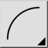
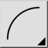

3 Puntos
Barra de herramienta / icono:


Menú: Dibujar > Arco > 3 Puntos
Acceso directo: A, 3
Comandos: arc3 | a3
Esta es una traducción automática.
Barra de herramienta / icono:


Menú: Dibujar > Arco > 3 Puntos
Acceso directo: A, 3
Comandos: arc3 | a3
Si conoce los puntos inicial, final y otro punto cualquiera del arco, puede utilizar esta herramienta para dibujarlo.